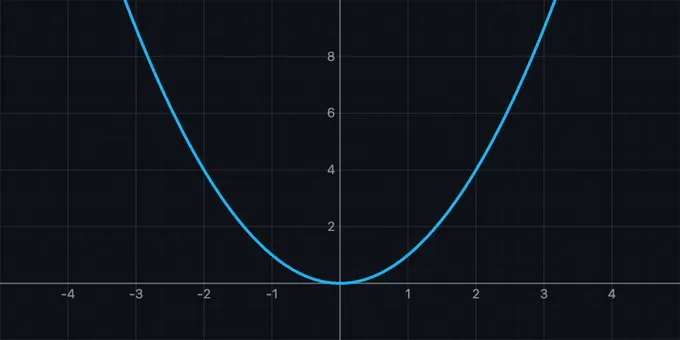
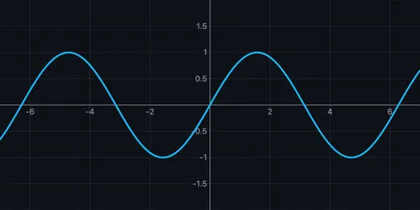
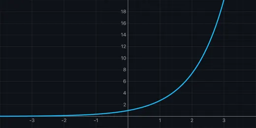

Calculus Visualizer & Simulator
Animated Derivatives • Integrals • Tangent Sweep • Riemann Sums • Symbolic Rules — Simulate • Explore • Practice • Quiz
How to Use
Getting Started
Type a function in the f(x) = input field (e.g., x^2, sin(x), e^x). The function plots instantly on the canvas. Use the Differentiate or Integrate button to start the animation.
Differentiation Animation
Click Differentiate to watch a tangent line sweep across f(x). The canvas splits: the upper panel shows f(x) with the moving tangent, while the lower panel builds the derivative curve f'(x) in real time. A floating label displays the current slope. After the animation, the symbolic derivative is shown in the sidebar.
Integration Animation
Click Integrate to see Riemann rectangles fill the area under f(x). Rectangles start coarse (n=8), subdivide to n=32, then n=128, and finally transition to a smooth shaded fill. The lower panel shows the accumulated area curve. A running total is displayed as the animation progresses.
Using Presets
Click any preset pill to load a curated function with an optimal view. Presets cover polynomials, trigonometry, exponentials, logarithms, and more. Each preset includes a known derivative and integral for verification.
Speed Control
Use the speed pills (0.5x, 1x, 2x) to slow down or speed up animations. Slower speeds are great for step-by-step classroom demonstrations; faster speeds let you iterate quickly.
Navigation & Export
Pan: Click and drag the canvas. Zoom: Use the scroll wheel or the +/- toolbar buttons. Reset: Click the reset button to return to the default view. Export: Save the current canvas as a PNG image with a watermark. Fullscreen: Expand the canvas for classroom presentations.
Supported Functions
You can use: sin, cos, tan, asin, acos, atan, ln, log, sqrt, abs, exp, sinh, cosh, tanh, floor, ceil. Constants: pi, e. Operators: +, -, *, /, ^. Implicit multiplication works (e.g., 2x, 3sin(x)). Note: log( ) is base-10, ln( ) is the natural log (base e), and log2( ) is base-2. All trigonometric functions work in radians.
Understanding Calculus Through Visual Animation

Calculus is the mathematical study of continuous change, built on two fundamental operations: differentiation and integration. While these concepts are often taught through symbolic manipulation, visual and animated representations can dramatically improve comprehension. The Calculus Visualizer brings these abstractions to life by animating the geometric meaning behind derivatives and integrals, making the connection between a function and its rate of change immediately intuitive.
How Derivatives Connect to Tangent Lines
The derivative of a function f(x) at a point measures the instantaneous rate of change, which geometrically corresponds to the slope of the tangent line at that point. When you watch a tangent line sweep across a curve, you can see how steep sections of the original function produce large derivative values, while flat sections (local maxima and minima) produce derivative values of zero. This visual connection is the foundation of optimization: finding where a derivative equals zero locates the extrema of a function. The power rule states that d/dx(x^n) = n*x^(n-1), and watching this rule in action through animation makes the pattern unmistakable.


From Riemann Sums to Definite Integrals
Integration reverses differentiation: while the derivative tells you the rate of change, the integral accumulates the total change over an interval. The Fundamental Theorem of Calculus establishes this inverse relationship formally. Riemann sums provide the visual bridge: by dividing the area under a curve into rectangles and watching them multiply from 8 to 128, students see how the approximation converges to the exact area. The antiderivative F(x) grows at a rate equal to f(x), which is why the accumulated area curve mirrors the antiderivative.
Symbolic Differentiation and Rule Identification
Beyond numerical computation, this simulator performs symbolic differentiation, applying the chain rule, product rule, quotient rule, and standard derivative formulas to produce an exact expression. Each result is tagged with the rule used, helping students learn not just the answer but the process. For example, differentiating sin(x^2) applies the chain rule: cos(x^2) * 2x. Simplification passes fold constants and eliminate redundant terms like 0 + x or 1 * x, producing clean readable results.
Who Uses This Simulator?
Engineering and vocational education students use this tool to build geometric intuition for calculus before diving into formal proofs. Teachers use the split-panel animation in fullscreen mode for classroom demonstrations. Self-learners use the 15 built-in presets to explore how different function families behave under differentiation and integration, from simple polynomials to trigonometric compositions.
Explore Related Simulators
If you found the Calculus Visualizer helpful, explore our Math Function Graph Generator, Stress-Strain Diagram Simulator, and Beam Bending Calculator for more hands-on engineering and mathematics practice.